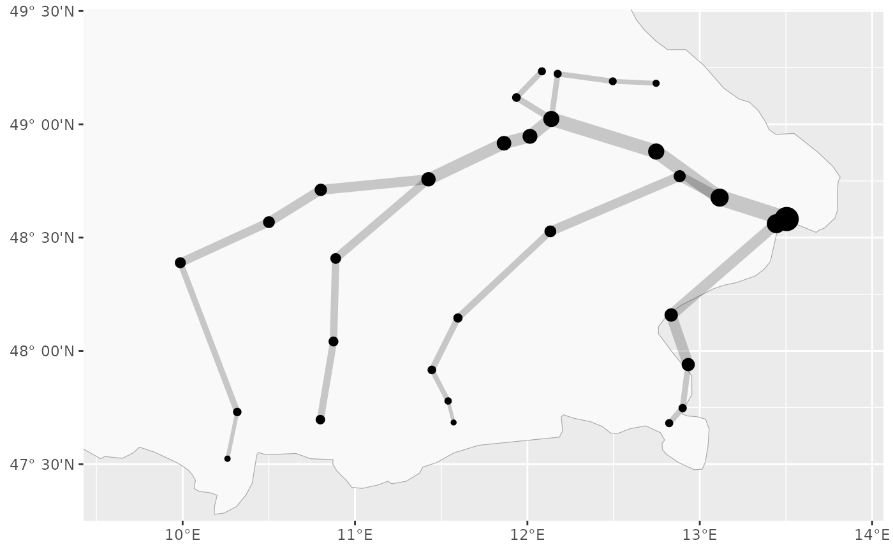
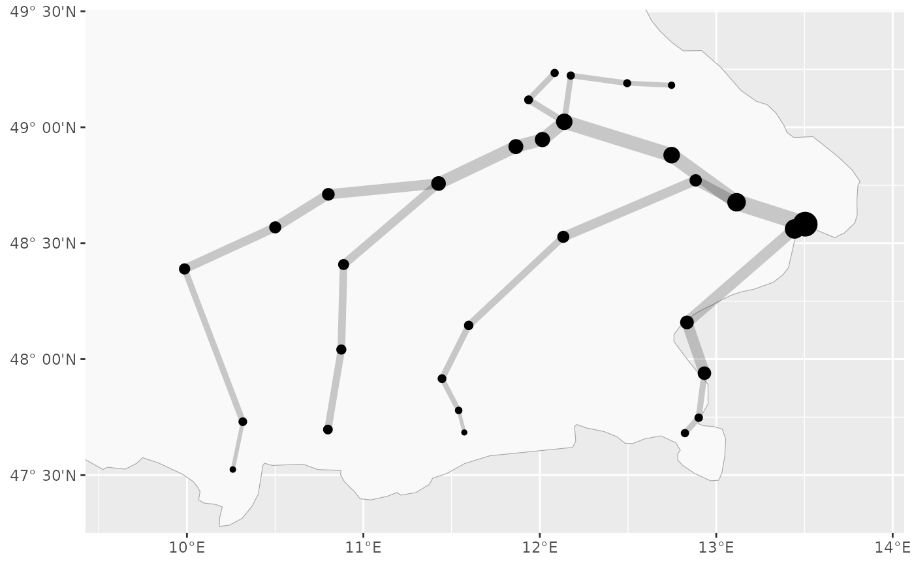

Plotting function to visualize the river flow data from the danube dataset.
Requires ggplot2 to be installed.
Usage
plotDanube(
stationIndices = NULL,
graph = NULL,
directed = NULL,
plotStations = TRUE,
plotConnections = TRUE,
labelStations = FALSE,
returnGGPlot = FALSE,
useStationVolume = FALSE,
useConnectionVolume = FALSE,
mapCountries = c("Germany"),
vertexColors = NULL,
vertexShapes = NULL,
edgeColors = NULL,
xyRatio = NULL,
clipMap = 1.2,
useLatex = FALSE,
edgeAlpha = 0.2
)
plotDanubeIGraph(
stationIndices = NULL,
graph = NULL,
directed = NULL,
labelStations = TRUE,
vertexColors = NULL,
vertexShapes = NULL,
edgeColors = NULL,
...
)Arguments
- stationIndices
Logical or numerical vector, indicating the stations to be plotted.
- graph
An
igraph::graphobject orNULLto use the flow graph.- directed
Logical. Whether to consider the flow graph as directed.
- plotStations
Logical. Whether to plot the stations.
- plotConnections
Logical. Whether to plot the connections.
- labelStations
Logical. Whether to label stations.
- returnGGPlot
If
TRUE, aggplot2::ggplotobject is returned and not plotted immediately.- useStationVolume
Logical. Whether to indicate flow volume at a station by circle size.
- useConnectionVolume
Logical. Whether to indicate flow volume on a connection by line width.
- mapCountries
Which country borders to show using
ggplot2::map_data('world', mapCountries).- vertexColors
Vector with color information for vertices.
- vertexShapes
Vector with shape information for vertices.
- edgeColors
Vector with color information for edges.
- xyRatio
Approximate X-Y-ratio (w.r.t. distance on the ground) of the area shown in the plot.
- clipMap
Logical or numeric scalar. Whether to ignore the map image when determining the axis limits of the plot. If it is a positive scalar, the plot limits are extended by that factor.
- useLatex
Whether to format numbers etc. as latex code (useful when plotting to tikz).
- edgeAlpha
Numeric scalar between 0 and 1. The alpha value to be used when plotting edges/connections.
- ...
Passed through to
igraph::plot.igraph.
Details
The values of vertexColors, vertexShapes, and edgeColors are interpreted differently
by ggplot2::geom_point/ggplot2::geom_segment and igraph::plot.igraph().
plotDanube uses a combination of ggplot2 functions to plot the graph.
plotDanubeIGraph uses igraph::plot.igraph to plot the graph.
See also
Other danubeData:
danube,
getDanubeFlowGraph()
Examples
# Basic plot
graphicalExtremes::plotDanube()
#> Loading required namespace: ggplot2
 # Plot flow volumes
graphicalExtremes::plotDanube(
clipMap = 1.2,
useConnectionVolume = TRUE,
useStationVolume = TRUE
)

# Plot other graph structures
nStations <- nrow(graphicalExtremes::danube$info)
g <- igraph::erdos.renyi.game(nStations, nStations, 'gnm')
graphicalExtremes::plotDanube(
clipMap = 1.2,
graph = g
)
# Plot flow volumes
graphicalExtremes::plotDanube(
clipMap = 1.2,
useConnectionVolume = TRUE,
useStationVolume = TRUE
)

# Plot other graph structures
nStations <- nrow(graphicalExtremes::danube$info)
g <- igraph::erdos.renyi.game(nStations, nStations, 'gnm')
graphicalExtremes::plotDanube(
clipMap = 1.2,
graph = g
)